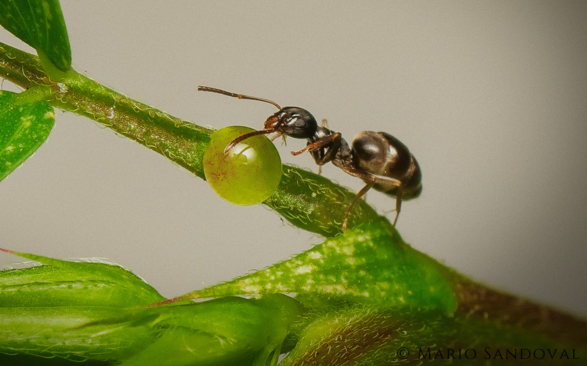
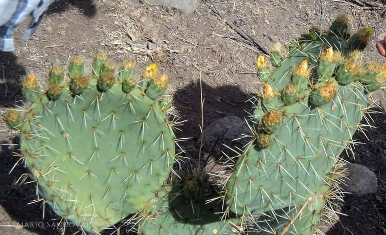

Mario A.
Sandoval-Molina
MSc, Biologist, Ecologist, Entomologist, R fan | Insect-plant interactions |
English-Español | Looking for my PhD

Mis articulos científicos en Español:
La labor de los científicos no sólo es investigar y publicar sus resultados en revistas especializadas, sino también dar a conocer sus descubrimientos a la sociedad. Creo que es importante divulgar nuestras investigaciones en nuestro propio idioma nativo. Actualmente la mayor parte de información científica disponible está en idioma inglés, y muchos NO angloparlantes tienen restricciones/sesgo para acceder a esta información. Por esta razón, me he propuesto publicar el resumen de mis investigaciones en idioma español, mi idioma principal. De esta manera espero acercar el conocimiento a más personas cuyo idioma es Español.

Hasta donde sabemos, no hay estudios sobre la estructura y función ecológica de los nectarios extraflorales (EFNs) en Opuntia robusta. Esta es la primera descripción de EFNs en O. robusta, donde las espinas ....

a hipótesis de la defensa óptima predice que un aumento de las capacidades de defensivas, niveles más bajos de daño y menor inversión en biomasa vegetativa se producirán con más frecuencia en las formas sexuales con mayor...

La actividad de forrajeo de las abejas depende de una combinación de diversos factores, como su biología, los rasgos florales atractivos para las abejas y los factores ambientales. Realizamos este estudio para determinar si la variación de la apertura floral, el despliegue floral y ...

Los domacios son estructuras huecas en las plantas ocupadas por colonias de hormigas, que a su vez les proporcionan protección contra los herbívoros. En las plantas, la competencia por recursos ha impulsado cambios relacionados al sexo en los patrones de asignación de recursos a ...